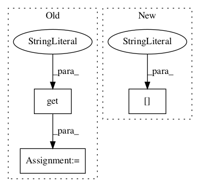

cb112c4dfca92159520bb7b2c8a95a94ab38239c,python/baseline/tf/tagger/model.py,TaggerModelBase,create,#Any#Any#Any#,279

Before Change
model.lengths = kwargs.get("lengths", tf.placeholder(tf.int32, [None], name="lengths"))
model.y = kwargs.get("y", tf.placeholder(tf.int32, [None, None], name="y"))
model.pdrop_in = kwargs.get("dropin", 0.0)
model.labels = labels
model.span_type = kwargs.get("span_type")
inputs = {"lengths": model.lengths}
After Change
inputs[k] = x
model._unserializable.append(model.lengths_key)
model.lengths = kwargs.get("lengths", tf.compat.v1.placeholder(tf.int32, [None], name="lengths"))
inputs["lengths"] = model.lengths
model.y = kwargs.get("y", tf.placeholder(tf.int32, [None, None], name="y"))
model.sess = kwargs.get("sess", create_session())
In pattern: SUPERPATTERN
Frequency: 3
Non-data size: 3
Instances
Project Name: dpressel/mead-baseline
Commit Name: cb112c4dfca92159520bb7b2c8a95a94ab38239c
Time:
Author: null
File Name: python/baseline/tf/tagger/model.py
Class Name: TaggerModelBase
Method Name: create
Project Name: arnomoonens/yarll
Commit Name: 3ff2a365cc9ddd5faf8c9f3d1efafe5216cd10a7
Time:
Author: null
File Name: REINFORCE.py
Class Name: REINFORCELearner
Method Name: __init__
Project Name: arnomoonens/yarll
Commit Name: 3ff2a365cc9ddd5faf8c9f3d1efafe5216cd10a7
Time:
Author: null
File Name: A2C.py
Class Name: A2C
Method Name: __init__